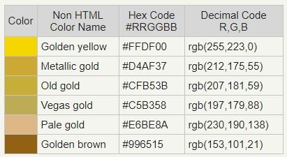

This color scheme can be aquired from https://venngage.com/blog/blue-color-palettes/ and is known as the Carolina Blue + CG Blue Color Palette This color pallet is used throughout the website using #003459 for the bottom navbar as well as the footer, #007ea7 being used for the first part of the logo and every other color being used in diffrent areas. As of writing this there is an idea to use color pallet #00171f as the text color however black is good at the moement. There is a change from the inital wireframes which were filled with more greys however those greys have been replaced by this blue color scheme. This was done because put into practice the grey did display as too dull and boring for my liking as well as viewers. The blue is more vibrant and attractive as well as a color I see as more calming and analytical and that is an appropriate mood for my website as the data being displayed is nothing to get worked up about and does require the viewers to analyse the data in a calm mood.

This color was aquired from https://za.pinterest.com/pin/677510337666738017/. Only one color is used as of writing this and that is Metallic gold or #D4AF37 which is used in the bar graph for the League of Legends data this was done as League of Legends makes use of this color in its logo as can be seen in the Image below.